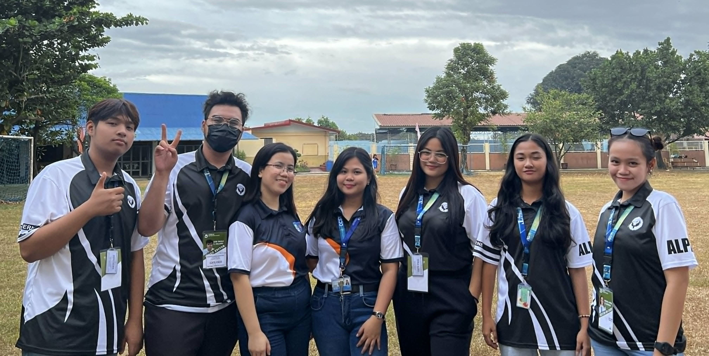
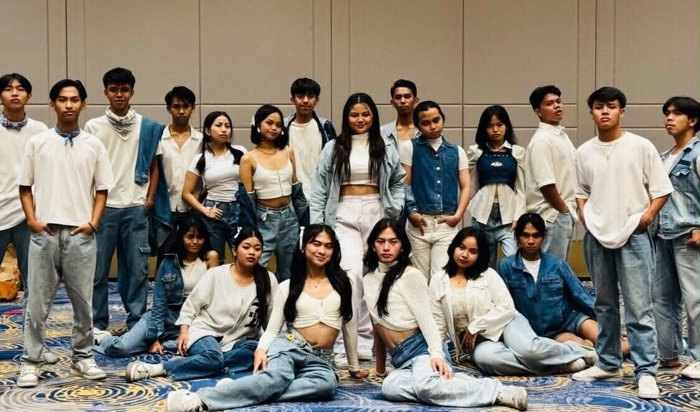

Friends and Personal Connections
Building strong friendships and personal relationships that provide support, encouragement, and shared experiences throughout my journey.

Officers and Leadership Roles
Serving in officer positions and leadership roles that develop organizational skills and the ability to work effectively with teams.
Church Community Connections
Active participation in church community activities that strengthen faith, provide spiritual guidance, and foster meaningful relationships.
Table Tennis Team
Participation in table tennis teams that promote physical fitness, strategic thinking, and collaborative spirit.

Dance Group
Active participation in dance groups that promote creativity, self-expression, and teamwork.